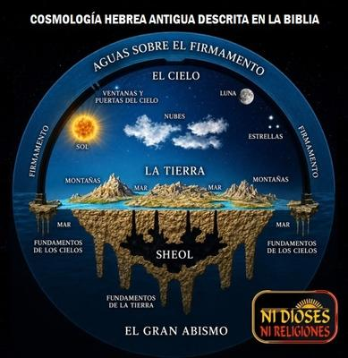

El tema del Diluvio Universal y el Arca de Noé ha sido abordado ya desde múltiples ángulos y disciplinas, llegándose siempre a la misma conclusión: que se trata tan sólo de un relato mitológico que, por sus niveles de absurdidad, no puede ser considerado como hecho real ni histórico. Los teólogos, por supuesto, hacen malabares mentales para buscar justificaciones racionales al relato, pero sin ningún éxito.


Hoy nos limitaremos al campo de la hidrometeorología, una disciplina que se enfoca en el ciclo del agua y las estadísticas de lluvia de las tormentas, para la predicción de inundaciones extraordinarias, y veremos que también desde este enfoque, la narración bíblica del «Diluvio Universal» resulta ser sólo un creativo relato literario. Como máximo, una fantasía épica que ignora por completo cómo funciona el planeta.
Según el Génesis, «aquel día fueron rotas todas las fuentes del grande abismo, y las cataratas de los cielos fueron abiertas, y hubo lluvia sobre la tierra cuarenta días y cuarenta noches» (Génesis 7:11-12). Y como consecuencia, «todos los montes altos que había debajo de todos los cielos, fueron cubiertos (Génesis 7:18-21).
Comencemos por aclarar que, según la primitiva visión de los redactores bíblicos, había un océano primordial que rodeaba y sostenía la Tierra. Ellos se imaginaban el mundo como si fuera una especie de burbuja de aire, con un cuerpo de agua arriba de la atmósfera y agua debajo de la Tierra seca en un «gran abismo». Al «romperse» las «fuentes del grande abismo», el agua que estaba debajo de la corteza terrestre, según ellos, brotó violentamente hacia arriba. Pero además creían que el cielo era una estructura sólida (el firmamento o raquía) que sostenía un océano celestial. Y tenía «ventanas» o compuertas, que cuando se abrieron, el agua que estaba «sobre el firmamento» (mencionada en Génesis 1:7) cayó masivamente sobre la Tierra.
Se trata de una concepción del mundo que hasta pudo resultar risible a los pensadores racionales griegos, como Aristóteles o Eratóstenes, quienes ya visualizaban la Tierra como un planeta esférico. Eratóstenes incluso, en el siglo III AEC, calculó la circunferencia de la Tierra. En cambio, la mayoría de las personas en el Medio Oriente del siglo I y antes, incluidos los autores del Nuevo Testamento y sus audiencias, seguían entendiendo el cosmos de forma tripartita: el cielo arriba, la tierra en medio y el abismo abajo. Por eso, aunque en el mundo griego había conocimientos más avanzados, la mentalidad religiosa y popular de Judea seguía creyendo en un Diluvio provocado por una falla temporal en las barreras físicas de esos tres niveles.
De más está decir que hoy hasta un niño de primaria tiene una comprensión cosmológica mucho más acertada que «la palabra de Dios». Y aunque los teólogos hagan sus acrobacias mentales para «explicar» o «interpretar» todas esas incongruencias y absurdidades, no logran justificar tanta ignorancia de parte de quienes supuestamente transcribieron directamente el mensaje del Creador del universo. Aunque lo más injustificado es que todavía en pleno siglo XXI, miles de millones sigan pensando que este libro es infalible y debería ser un texto escolar.
Pero sigamos con «palabra de Dios»: dice que después de romperse esas inexistentes fuentes del «grande abismo» y de que fueron abiertos los cielos, «hubo lluvia sobre la tierra cuarenta días y cuarenta noches» (Génesis 7:11-12).
¿En serio? ¿Puede llover simultáneamente en todo el planeta durante 40 días seguidos? —Esta es una idea que no resiste el más mínimo análisis atmosférico. Porque, a diferencia de lo que creían los redactores bíblicos, ahora sabemos que la lluvia no «aparece» mágicamente, sino que forma parte del ciclo hidrológico; un sistema cerrado donde el agua —que es limitada en el planeta— se evapora, se condensa y precipita.
Sí, el agua no se genera de forma ilimitada en nuestro planeta, sino que es la misma que ha habido siempre. Pero lejos estaban de comprender aquellos pastores del desierto que redactaron la Biblia, que la cantidad total de agua en la Tierra es finita, limitada a unos 1.386 millones de km³, de los cuales más del 97% es salada. No hay un depósito celestial infinito esperando ser abierto, como si fuera una ducha cósmica.
Y menos podrían comprender que la atmósfera funciona con patrones globales bien establecidos, con zonas de alta presión donde el aire desciende (y no llueve), y zonas de baja presión donde el aire asciende (y sí llueve). Y estos sistemas —como las celdas de circulación global— impiden que todo el planeta pueda experimentar lluvia en forma simultánea, habiendo siempre regiones secas y húmedas alternativamente. Por eso siempre, mientras en un lugar cae un aguacero, en otro lugar alguien se queja de la sequía. No es posible científicamente que llueva en todo el planeta simultáneamente, y menos durante un período tan prolongado como 40 días.
Pero resulta que además «la palabra de Dios» asegura que todos los montes altos del planeta fueron cubiertos de agua (Génesis 7:18-21). ¿Ah sí? ¿Cómo? Si hoy hasta un niño de primaria sabe que para cubrir el monte Everest, el más alto del mundo, el agua tendría que elevarse casi 9 kilómetros sobre el nivel del mar. Y esto es simplemente imposible. Porque como dijimos, la cantidad de agua del planeta es limitada y simplemente no sería suficiente para eso.
Si reuniéramos toda el agua del planeta (océanos, glaciares, ríos, vapor atmosférico) y la distribuyéramos uniformemente, cubriría solamente unos 2,7 km de profundidad promedio. Muy lejos de los casi 9 km necesarios para ocultar el Everest. O sea, ni usando toda el agua disponible en el planeta, se logra el escenario del Diluvio. Y tampoco el vapor atmosférico salva la situación, ya que representa sólo una diminuta fracción del total.
Por supuesto, existen y han existido lluvias impresionantes. Pero todas tienen algo en común: son locales o regionales, no globales. En el archipiélago de Hawái, se encuentra, por ejemplo, el Monte Waialeale, uno de los lugares más lluviosos del planeta, donde se han registrado hasta 16,916 mm de lluvia en un año (casi 17 metros). Y hubo allí períodos de lluvia durante cientos de días seguidos (aunque no de forma continua 24/7). Pero son en realidad precipitaciones frecuentes y continuas; no es lluvia constante sin parar, ni que cubra todo el planeta, ni que inunde siquiera continentes enteros. Es simplemente un caso extremo de un fenómeno perfectamente explicado por la meteorología, debido a humedad constante, más el relieve montañoso, más vientos persistentes.
Pero así mismo hay otros lugares donde casi nunca llueve. Un ejemplo notable son los Valles Secos de McMurdo en la Antártida Oriental, regiones donde no ha llovido en millones de años, manteniendo una humedad extremadamente baja, y condiciones que impiden la formación de nubes precipitantes. Es decir, mientras la Biblia imagina un planeta completamente inundado, la realidad ofrece simultáneamente lugares hiperhúmedos… y otros absolutamente secos.
Por tanto, simplemente desde el punto de vista de la hidrometeorología —sin tener que entrar en otros detalles absurdos relacionados con el Arca y la logística relacionada con la transportación de toda la fauna terrestre— no cabe más que descartar el evento conocido como «Diluvio Universal» como un hecho histórico posible. Definitivamente es algo que no ocurrió, porque físicamente no pudo haber ocurrido.
Lo curioso es que Jesús, siendo uno con el Creador del Universo, según declaró él mismo (Juan 10:30), y a pesar de haber estado desde el principio con «Dios», siendo que «Todas las cosas por él fueron hechas» (Juan 1:1-3), aún así, desconocía totalmente el funcionamiento del ciclo hidrológico, y murió creyendo que el Diluvio Universal había sido un hecho histórico real, según lo menciona en Lucas 17:26-27. Esto significa que —en caso de haber existido— Jesús compartía la cosmovisión de su cultura (alejada del conocimiento matemático griego), donde relatos fantásticos como ese no eran cuestionados.
Al final, el problema del «Diluvio Universal» no es sólo que sea improbable. Es que viola principios básicos de la física atmosférica, ignora el balance global del agua, contradice las observaciones geológicas, y no tiene ningún mecanismo natural plausible. Por tanto, desde la hidrometeorología, el relato no es simplemente un caso de mala predicción, es un evento absurdo, directamente incompatible con el funcionamiento del planeta.
Si como historia simbólica tiene su mérito literario, como evento real, necesitaría algo más que «cataratas del cielo».
[Godless Freeman]
https://misionesonline.net/2021/10/29/lugar-de-la-tierra-en-donde-no-llueve/
https://www.univision.com/explora/7-lugares-del-mundo-donde-nunca-o-casi-nunca-llueve
Comentarios
Comments powered by Disqus